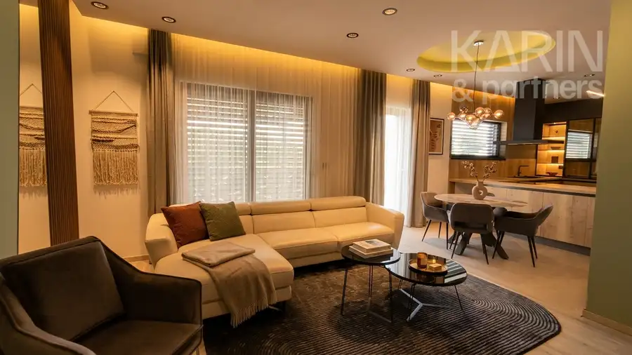
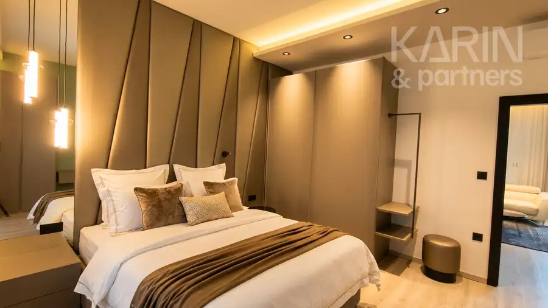
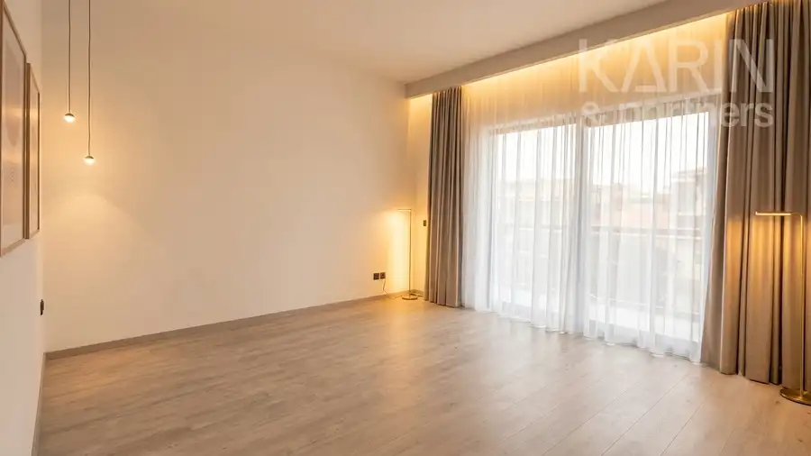
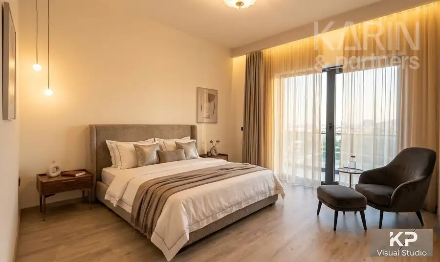
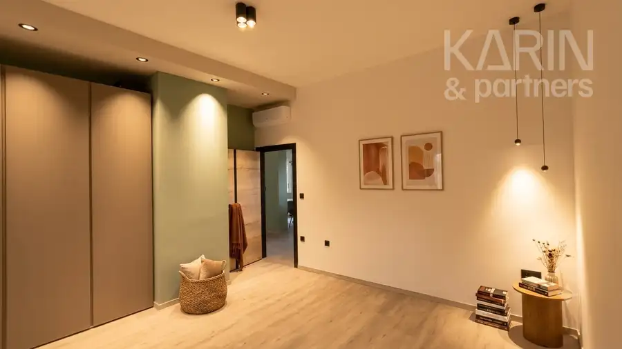

EXKLUZÍVNY luxusný veľkometrážny 3i byt s veľkou terasou
Nové Zámky






- Dispozícia3-izbový
- Plocha152 m²
- StavNovostavba
- VlastníctvoOsobné
O nehnuteľnosti
Veľkometrážny luxusný 3i byt | Terasa s predprípravou na JAKUZZI | 3xKlimatizácia | TOP lokalita | Súkromné ParkovanieVÝNIMOČNÁ PONUKA: Reprezentatívny veľkometrážny luxusný 3i byt v TOP lokalite, penthaus s veľkorysým priestorom terasy s predprípravou na JAKUZZI, v každej izbe osadená klimatizácia. Penthouse je byt situovaný na navyššom poschodí výškovej budovy. Tento typ bývania ponúka luxusné priestory a súkromie, pričom sa majiteľ nemusí obávať, že mu susedia budú pozerať do bytu. Penthouse je garancia súkromia a kombinuje výhody bývania v byte, s výhodami bývania v rodinnom dome, pričom navyše ponúka nádherný výhľad, reprezentatívnu exkluzivitu nehnuteľnosti a útulný interiér. Garantované SÚKROMIE, výnimočné dizajnové prevedenie.Výnimočný Luxus - Praktická Účelnosť - Dizajnová EleganciaZÁKLADNÉ ÚDAJE:- VÝMERA BYTU: 93m2- VÝMERA TERASA + BALKÓN: 59m2 - VÝMERA SPOLU: cca.152m2- Bytový dom je zateplený kvalitným 20cm termoizolačným materiálom- Okná, terasové posuvné a balkónové dvere s izolačným trojsklom- Vonkajšie hliníkové žalúzie na ďiaľkové ovládanie- Samostatné komfortné kúrenie - tepelné čerpadlo- Podlahové kúrenie so samostatným ovládaním s termostatom pre každú izbu- Rekuperácia pre každú miestnosť- 3x klimatizačná jednotka- VýťahV celý byt má v obytnej zóne plávajúce podlahy, ďalej dlažby a obklady v kúpeľni, na toalete. K celkovej pohode prispievajú aj kvalitné bezpečnostné vchodové dvere zn. ADLO a videovrátnik. DISPOZÍCIA: vstupná chodba s prepojením do veľkopriestorovej obývačky prepojenej s kuchyňou, 2x samostatné izby, priestranná kúpeľňa a samostatné WC. Na veľkorysom priestore terasy je postavená vo vstupe na terasu pergola, s regulovateľným horným tienením a v krytej časti terasy je predpríprava na saunu a jacuzzi.Interiér bytu je kompletne zariadený v modernom štýle charakterizovanom čistými líniami, praktickou účelnosťou a elegantnými detailmi. Pri návrhu a realizácii interiéru dizajnéri použili neutrálne zemité farby, ako je biela, hnedá a šedá, a hlavne kvalitné materiály v kombinácii s akcentmi dreva, kože a kovu. To dodáva bytu elegantný, praktický a sofistikovaný vzhľad. Celý byt je dizajnérsky zariadený nábytkom na mieru, vstavanými a posuvnými skriňami, ale aj rôznymi praktickými detailami, až po luxusné dekoračné látky, závesy a záclony.Precízne, luxusné a dizajnérsky nadčasové je aj prevedenie a rozmiestnenie celej elektroinštalácie a osvetlenia v byte, ale aj na terase a balkóne. Hlavným znakom je účelová kombinácia viacerých zdrojov svetla v každej miestnosti podľa jednej z troch funkcií: Relaxačné, pracovné alebo akcentové osvetlenie.Iba v jednej izbe zostáva dovybavenie a výber drobného nábytku a postele, na budúcom majiteľovi. Okrem tejto jednej miestnosti je byt kompletne vybavený a pripravený, na okamžité nasťahovanie.Pri výbere materiálov pre interiér bytu sa kládol dôraz na trvácnosť a kvalitu. Dizajnéri použili výnimočné materiály, ktoré sú vysoko odolné voči opotrebeniu a ľahko sa čistia. Vďaka tomu bude byt vyzerať krásne veľa rokov. Realizácia interiéru je skvelým príkladom komplexného moderného a luxusného bytového dizajnu, ktorý je zároveň kvalitný, ekologický a trvácny. CENA: 328.600 EUROBHLIADKY a KONTAKT: Ing.Klučiar ĽubomírTelefón: 0905 854286Mail: kluciar.l@karinpartners.skViac informácií o zákazke na: http://www.karinpartners.skVIZUALIZÁCIA ZOBRAZUJE VÝSLEDOK DIZAJNERSKÉHO NÁVRHU MOŽNEJ REKONŠTRUKCIE či NÁBYTKOVÉHO VYBAVENIA NEHNUTEĽNOSTI. Všetky fotky, texty, fotodokumentácie a vizualizácie nehnuteľnosti sú autorským dielom a majetkom sprostredkovateľa f. KARINPARTNERS s.r.o. !
Parametre
- Cena vrátane energií
- Nie
- Druh
- 3 izbový byt
- Dátum zverejnenia
- 10. 08. 2026
- Plocha terasy v m2
- 59 m²
- Počet izieb / miestností
- 3
- Stav nehnuteľnosti
- Novostavba
- Terás
- 2
- Typ
- Predaj
- Vlastníctvo
- Osobné
- Vybavenie
- Balkón, Terasa, Výťah
- Úžitková plocha
- 152 m²